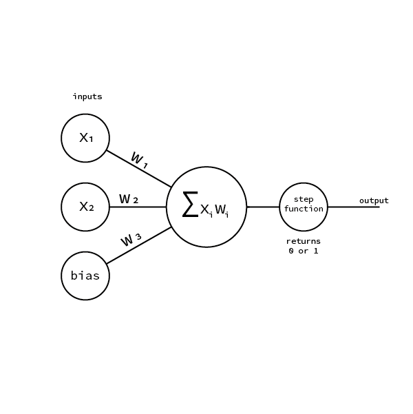

Semi serious attempt to understand the core concepts of Machine Learning
What is a PERCEPTRON
A perceptron is an artificial neuron, it was developed between the 50’s and 60’s by the scientist Frank Rosenblatt. But before we start to describe how an artificial neuron works it is worth to understand how our biological neurons operate. “The biological neuron is a nerve cell that provides the fundamental functional unit for the nervous system of all animals” (deep learning oreilly)That said how does it really work?
Before getting into the functionalities let’s see how a neuron is made. Every neuron is composed by a cell body called soma. The soma itself is attached to many dendrites but to only one axon. (Fig. 1) The Axon is a very long fiber that eventually branches to connect to other neurons. The connection between the axon and the neuron is composed by two parts: the synapse and the dendrite. The synapse process the impulse from the axon and transmits it to the dendrite that will deliver the impulse to the soma or cell body. The soma reads an interprets the information carried by the impulse and sends a new impulse to the axon. This procedure goes on and on endlessly. Neurons basically communicate each other via electro-chemical impulses. The impulse to proceed from one neuron to the other must “be strong enough to activate the the release of chemicals across a synaptic cleft“(deep learning oreilly). The impulse must surpass a the threshold of the synapses otherwise the chemicals will not be released.How does an artificial neuron work?
As already said at the end of the 50’s Frank Rosenblatt developed the first artificial neuron modelled onto the biological one: the perceptron. The perceptron is a linear model for binary classification. It takes some inputs, those inputs are than processed with dot product between themselves and the weights. The result is than fed to the step function that returns 0 or 1. The nature of the output gives the perceptron the possibility to learn to classify between two distinct states. This means that it is a linear classifier, it can classify things that in a graph can be separated by a line.(???) Before we deepen into the mathematical and algorithmic concepts regarding the perceptron it is worth to describe what the weights are. The weights were introduced by Rosenblatt in his perceptron model. Those numbers express “the importance of the respective inputs to the output” (http://neuralnetworksanddeeplearning.com/chap1.html). Therefore the weights define which input is more important in order to get a desired output. The whole purpose of machine learning is to tune the weights of artificial neurons, so that given a set of inputs the neuron will output a correct answer. It is important to make clear how important it is to understand the role of the weights. If we look again at the fig. 2 we see a perceptron. Let’s assume this perceptron can classify wether an animal is a dog or a cat given two inputs value like size and sound/pitch (assuming that is possible to encode sound in a unique number). The value of the weights determines the output. In the case of the dog the weights favour the size as a cat has always lower size while cats weights favour the pitch as cats have an higher pitch than dogs. Of course chiwawas might be confused as dogs. But this because we would need much more inputs to really classify between the two species.How does the weights tuning happen?
One of the methodologies for tuning the weights is with the method of supervised learning. Here there is an great explanation by Daniel ShiffmanWith this method[supervised learning], the network is provided with inputs for which there is a known answer. This way the network can find out if it has made a correct guess. If it’s incorrect, the network can learn from its mistake and adjust its weights. The process is as follows:Let’s dig into the mechanics of the perceptron. The first thing to understand is this formula, the dot product:
- Provide the perceptron with inputs for which there is a known answer.
- Ask the perceptron to guess an answer.
- Compute the error. (Did it get the answer right or wrong?)
- Adjust all the weights according to the error.
- Return to Step 1 and repeat! (nature of code)
$$\sum_{i=1}^{n} x_{i} w_{i} $$
Given a perceptron with 5 inputs the result of the dot product will be
w_{1}x_{1}+w_{2}x_{2}+w_{3}x_{3}...+w_{5}x_{5}
The the result of the dot product is the sum of the product of each input with its own weight. There is an important thing to add: the bias. As you can see above the we are dealing with a sum of products. Therefore if we have an input value equal to 0 it will always return 0. To avoid that we insert a third input called the bias that we set to 1.

On the the other hand the step function will look like this
Therefore if the result of the dot product is greater or equal than 0 the result will be 1 otherwise it will be 0.
As already mentioned the perceptron is good in classifying linearly separable problems. Than lets consider a very simple situation where we have a two-dimensional space separated by a wall and we want our perceptron to be able to classify if the a random point placed in the space is either on one side or on the other.
first we need to build our perceptron.
indented lineunindented lineline starting and ending with tabthe above line should be emptyoverlong line that wraps around or so I hope because it's really long and should overflow the right sided margin of the web page in your browserfill up to tenlines to checkalignmentof numbers